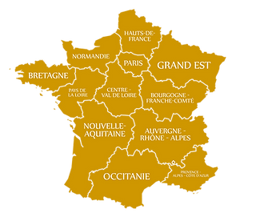

Rachat de lots et liquidations en France
Estimations et déplacements gratuits partout en France

Rachat de stocks de vêtements, chaussures, sous-vêtements et autres marchandises à Lyon, Paris, Marseille, Toulouse, Nice, Bordeaux et partout en France
Votre magasin doit liquider un stock excédentaire ? Vous cherchez un acheteur fiable pour vos vêtements, chaussures ou sous-vêtements invendus ? Besoin d’une solution rapide pour gérer une liquidation judiciaire ou un déstockage urgent ?
Basé à Lyon, Francesoldeur propose des services professionnels de rachat de lots pour les commerçants et entreprises partout en France. Nos experts évaluent vos marchandises avec précision et vous offrent des solutions adaptées à vos besoins, que vous soyez à Paris, Marseille, Toulouse, Nice, Bordeaux ou ailleurs. Nous rachetons tous types de lots, des vêtements aux chaussures en passant par les sous-vêtements, pour vous permettre de libérer de l’espace et de valoriser vos stocks.

Votre partenaire, compétent et disponible du lundi au samedi, intervient dans toute la France pour racheter vos lots. Que vous soyez un particulier, un commerçant ou une entreprise en liquidation, nous garantissons des prestations rapides et professionnelles.
Nos services de rachat de lots
Avec 9 ans d’expérience, Francesoldeur propose une gamme complète de services pour répondre à vos besoins en déstockage :
- Rachat de lots de vêtements
- Rachat de stocks de chaussures
- Rachat de sous-vêtements invendus
- Liquidation de magasins en fermeture
- Déstockage de marchandises diverses
- Évaluation rapide et gratuite de vos stocks
- Gestion de liquidations judiciaires
Équipés pour évaluer tout type de marchandise, nous vous conseillons sur la meilleure stratégie pour valoriser vos stocks, que ce soit à Lyon, Paris, Marseille, Toulouse, Nice, Bordeaux ou ailleurs en France. Nous assurons un service rapide et efficace pour vous permettre de vous concentrer sur votre activité.
Pour vos besoins en déstockage ou pour plus d’informations, contactez Francesoldeur dès maintenant. Découvrez également des conseils sur la gestion de stocks avec la Direction Générale des Entreprises.